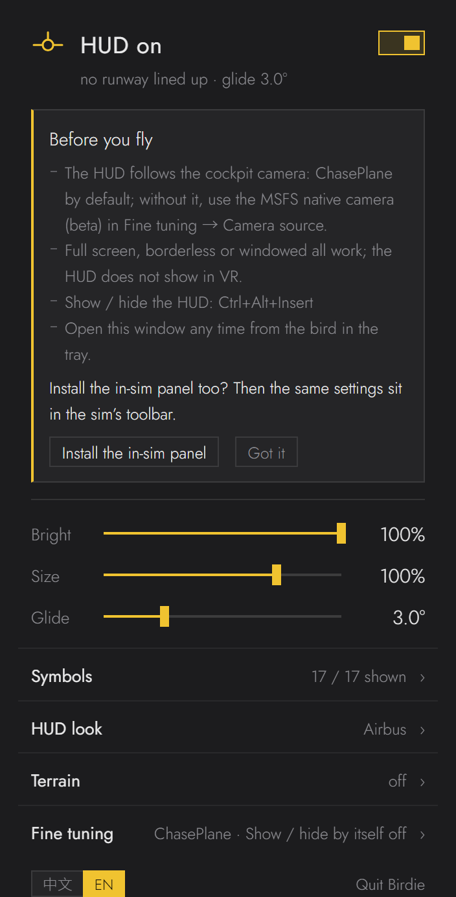
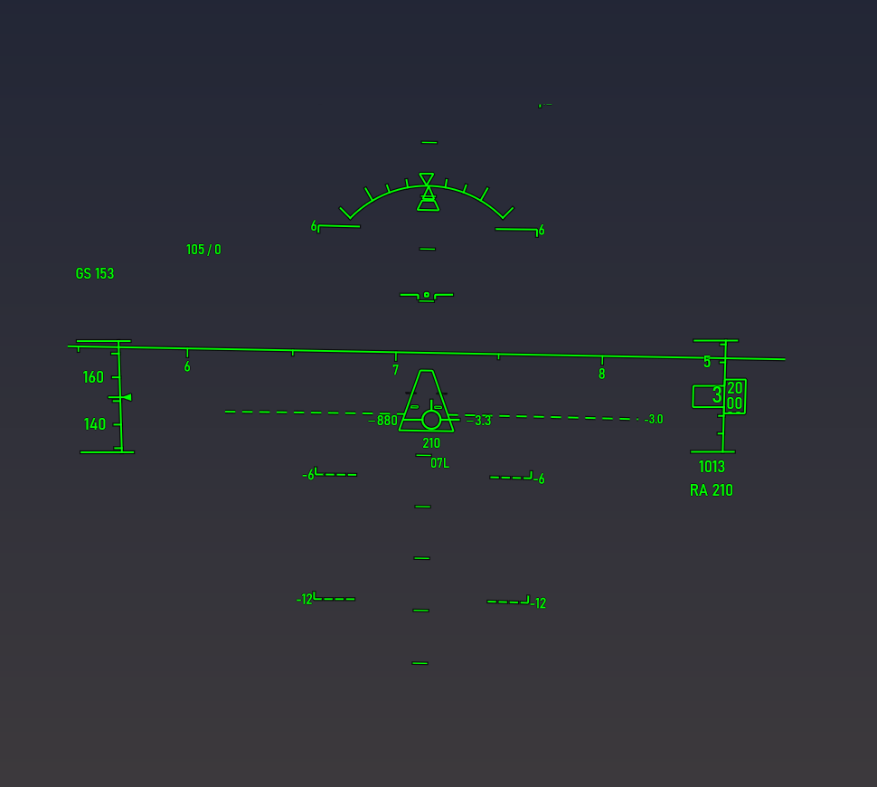
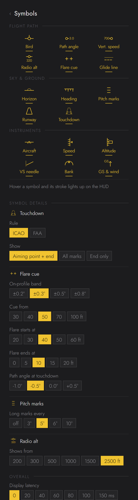
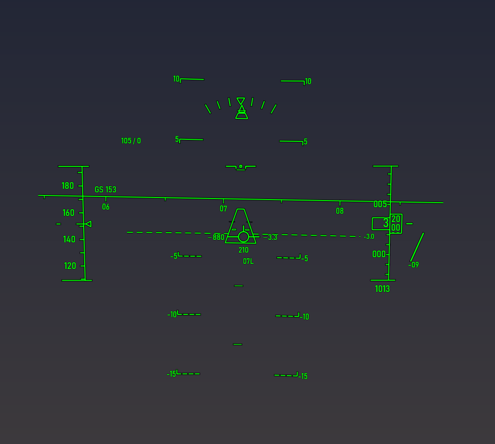
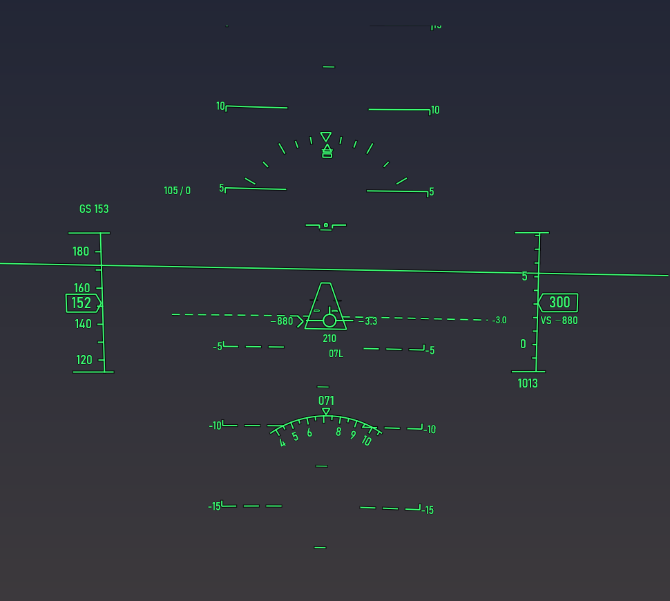
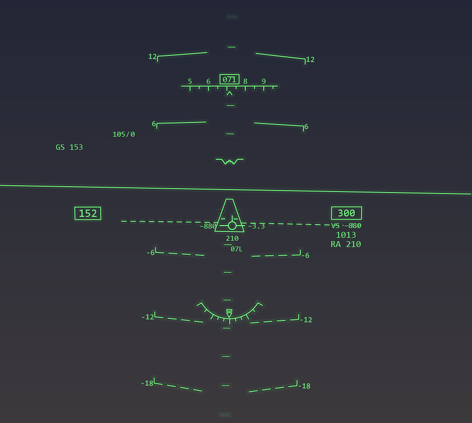
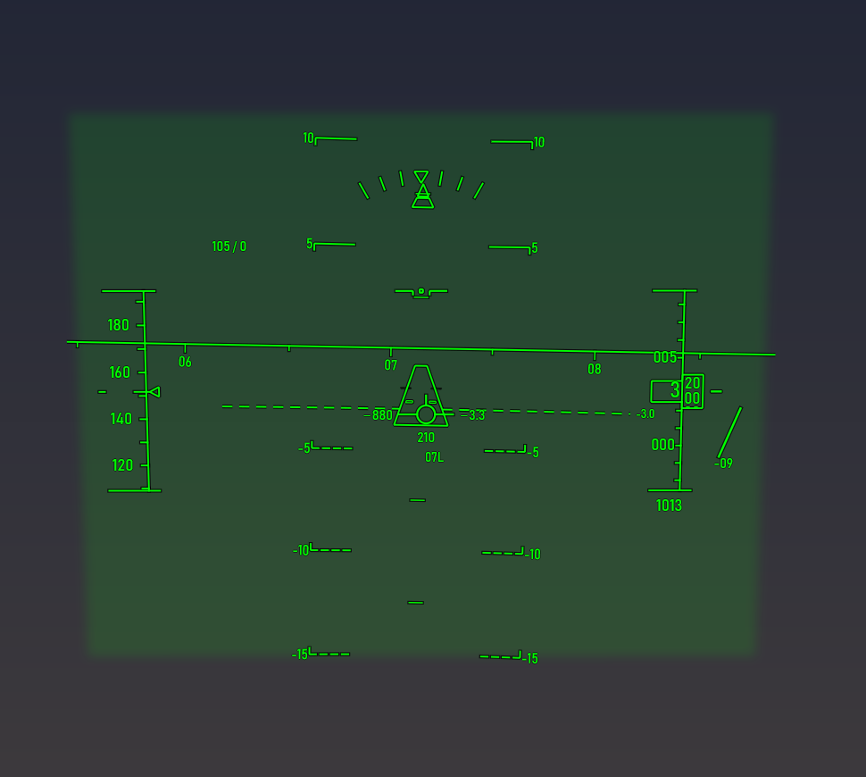
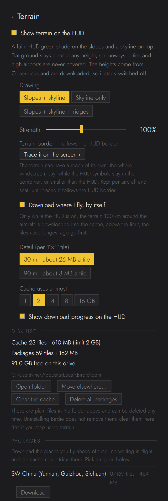
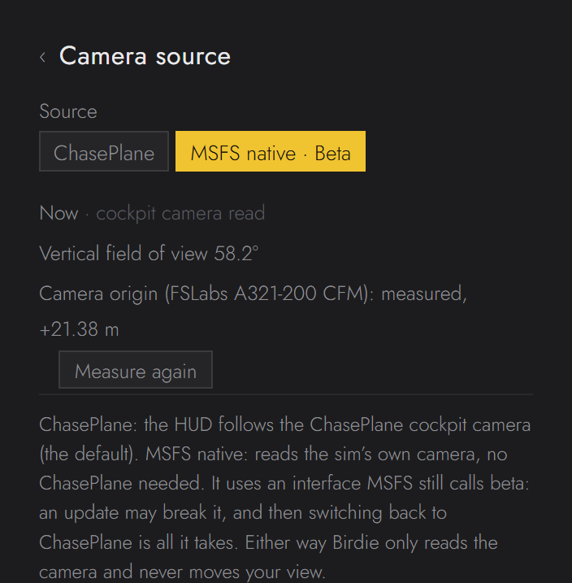

Birdie draws a head-up display over Microsoft Flight Simulator 2024 (MSFS 2024). It is a separate, transparent window that mouse clicks pass through, rendered on the GPU. Nothing is injected into the simulator; all data comes from SimConnect.
Its core symbol is the flight path vector, the "bird": it marks where the aircraft is actually going. A flat screen makes the glide path and the touchdown point hard to judge; the bird supplies that cue. Put the bird on the runway's aiming point and that is where the aircraft is heading.
Around the bird, Birdie draws two kinds of symbols:
It looks like an Airbus HUD by default. Boeing, fighter and minimal presets are one click away, and every element's style, size, position and colour can be set on its own (chapter 7). Two more things are there if you want them, both off by default: a background tint inside the HUD (chapter 7) and the terrain drawn on the HUD (chapter 8).
Birdie-{{version}}.zip to a folder of its own, e.g. D:\Birdie. Do not run it from inside the zip: SimConnect.dll must sit next to Birdie.exe.Birdie.exe. It is not code-signed, so Windows may say "Windows protected your PC": click "More info", then "Run anyway".
The "Before you fly" card says three things: ChasePlane is needed; the HUD does not show in VR (full screen, borderless and windowed all work); and the hotkey that shows / hides the HUD (Ctrl+Alt+Insert by default).
It also offers the in-sim panel: once installed, the bird sits in the sim's top toolbar and the same settings can be changed without leaving the flight. The panel is optional; Birdie works without it.
Birdie finds the Community folder in UserCfg.opt (Microsoft Store and Steam). Restart the sim once after installing, then the bird is in the toolbar.
Click the bird in the tray any time to open the settings window.
| Symbol | What it shows | |
|---|---|---|
| 1 | Bird (flight path vector) | Where the aircraft is really going. Here it sits on the aiming point. |
| 2 | Path angle | Right of the bird: the flight path angle (°), negative when descending. |
| 3 | Vertical speed | Left of the bird, ft/min. |
| 4 | Radio altitude under the bird | Shown below a set height (2,500 ft by default, as on the Airbus HUD). |
| 5 | Glide reference line | Dashed line on the ground at the set glide angle (3.0° by default). |
| 6 | Runway outline | The runway you are lined up with, from the sim's own airport data, with its name under it. |
| 7 | Touchdown-zone marks | The aiming point marks and the end of the touchdown zone, after ICAO or FAA (chapter 4). |
| 8 | Horizon | The true horizon. |
| 9 | Heading scale | Magnetic heading on the horizon; the figures are tens of degrees, two digits (07 = 070°). |
| 10 | Pitch scale | Rungs every set step (5° by default, as on the Airbus HUD): solid above the horizon, dashed below. |
| 11 | Short marks | A short mark every 2.5°. |
| 12 | Nose mark | Where the nose points; read pitch and bank against it. |
| 13 | Bank scale | Bank scale (10°, 20°, 30°) and pointer at the top; the small trapezoid under the pointer is sideslip. Past 35° of bank the arc and the 45° and 67° marks join in. |
| 14 | Speed tape | Indicated airspeed (kt), three-digit marks (120, 080). The hollow triangle points at the speed; the narrow hollow bar above or below it is the speed trend (the speed in 10 s). |
| 15 | Wind & ground speed | Wind direction / speed and an arrow relative to the nose. The ground speed sits right of the speed tape, on the ground and in the air (the real A320 HUD shows it on the ground only). |
| 16 | Altitude tape | Barometric altitude, marks in hundreds of feet, three digits (005 = 500 ft); the readout rolls below the hundreds. |
| 17 | Baro | Under the altitude tape: pressure setting (hPa). With “Radio altitude under the bird” off, the radio altitude shows here too. |
| 18 | Vertical speed needle | Right of the altitude tape; the figure is hundreds of ft/min. |
Each symbol can be switched on or off on the Symbols page of the settings window (chapter 6).
On approach, fly the bird onto the runway's aiming point (between the two large white blocks) and keep it there. The aircraft goes where the bird is: a bird held on the aiming point is a stable glide path. A bird drifting towards the far end means the path is getting shallower; towards you, steeper.
The glide reference line marks where the set glide angle (3.0° by default) meets the ground. With the bird on the line, you are on that angle. Set it on the home page (Glide), or with Ctrl+Alt+PgUp / PgDn in 0.1° steps, to match the airport's glide path.
Birdie picks the runway you are lined up with and draws its outline from the sim's own airport data, so it matches the runway in the picture. The touchdown-zone marks follow the rules for the runway's length:
Show "Aiming point + end" (default), "All marks" or "End only". The end is a pair of short solid blocks across the runway edges.
Below 50 ft (adjustable) a cue blinks above the bird. It compares your flight path angle with an ideal flare: start at 40 ft and reach −0.5° at 10 ft (all three adjustable, chapter 6, Symbol details).
"On the profile" means within the on-profile band, set under Symbol details (±0.3° by default). On sloped runways the slope is taken out first.

In a strong crosswind the aircraft crabs, and the bird and runway drift to one side, where a tape may cover them. Ctrl+Alt+Shift+Insert turns on crosswind mode: the speed and altitude tapes get shorter and move outward and the vertical speed needle goes, clearing the middle of the view. Press again to go back.
Ctrl+Alt+Insert turns the HUD on or off. While it is on, Birdie also hides it when it should, and brings it back when the reason is gone. The status line at the top of the settings window says what is going on:
| Status | Why | What to do |
|---|---|---|
| HUD on | Shown; next to it the runway and glide angle. | |
| HUD standing by | "Show once the roll passes" is on and you are on the ground below that speed. | It shows on the take-off roll; or turn it off under Show / hide by itself. |
| HUD hidden | You are looking aside. | Look ahead. |
| HUD not shown | Outside view. | Go back to the cockpit view. |
| HUD paused | MSFS is not in front, or the sim is paused / the data stopped. | Switch back to the sim / unpause. |
| HUD hidden up high | "Hide when high" is on and the radio altitude is above the set height. | It returns below that height. |
| ChasePlane not detected | The camera source is ChasePlane, and no ChasePlane cockpit view was found. | Run ChasePlane and use its cockpit view, or switch to the MSFS native camera under Fine tuning → Camera source. |
| No MSFS camera data | The camera source is MSFS native, and the sim sends no camera data. | Use the cockpit view; read the notes under Fine tuning → Camera source; if it still fails, switch back to ChasePlane. |
| No simulator | MSFS is not running yet. | Connects by itself when MSFS starts. |
| HUD off | You turned it off. | The hotkey or the switch on the home page. |
Under Fine tuning → Show / hide by itself:
Every setting lives in one page; changes apply at once and are saved by themselves. To open it:


Seventeen symbols in three groups: flight path (bird, path angle, vertical speed, radio altitude, flare cue, glide line), sky & ground (horizon, heading, pitch marks, runway, touchdown zone) and instruments (nose mark, speed, altitude, VS needle, bank, ground speed & wind).
Tap one to switch it. Hover a symbol and its stroke lights up on the HUD while the rest dims.
Symbol details: under the icons, a few symbols have settings of their own, each under its small icon; while that symbol is off its part dims but still works.
| Touchdown | The rule (ICAO / FAA) and what to show (aiming point + end / all marks / end only), chapter 4. |
| Flare cue | The on-profile band (±0.3° by default), cue from (50 ft), flare starts at (40 ft), flare ends at (10 ft), path angle at touchdown (−0.5°). |
| Pitch marks | Long marks every: off, 3°, 5° (default), 6°, 10°. |
| Radio alt | The height below which it shows under the bird, 2,500 ft by default. |
| Overall · display latency | The HUD is always a little behind the sim picture. These milliseconds extrapolate the attitude forward to hide it. If the HUD lags in turns, add some (0–150 ms, 0 by default). |
One click changes the whole set: layout, element styles, colour and lines (the opening / closing stays). The minimal preset also switches a few symbols off; turn them back on under Symbols if you like. Change anything afterwards and the preset reads "Custom".





| Flight path symbol | Airbus, Boeing, Fighter, Minimal, Ring, Cross |
| Speed / Altitude | Airbus (tape), Boeing (tape + box), Box only |
| Vertical speed | Needle, Number |
| Pitch scale | Airbus, Boeing, Fighter, Minimal |
| Heading | On the horizon, Compass arc, Top tape |
| Bank | Airbus, Boeing, Bottom |
"Acceleration caret (Boeing)" puts a caret by the bird's left wing; above the wing means gaining speed.
Colour (green, soft green, lime, white, cyan, amber, magenta or your own), font (Bahnschrift, Consolas, Segoe UI, Arial Narrow), outline (a dark edge under every stroke, for bright backgrounds) and glow.
The crosswind mode switch sits right under Layout (chapter 4). Each instrument group (speed tape, altitude tape, vertical speed, ground speed & wind, bank scale) moves across and up/down and changes length and size. Overall: spread, text size and line width; and the bird, nose mark, rung width and heading position. Offsets are in degrees on the HUD. While you adjust, the HUD stays on, even on the ground; "Reset the layout" puts it back.
How the HUD appears and goes: none, fade (default), iris, power-on, scan, assemble; duration 0.5–2×. From the cockpit view, "Play the opening / closing" shows it on the HUD.
The HUD can reach past the cockpit's windscreen. Under HUD look → HUD border, from the cockpit view, choose "Trace it on the screen" and click a polygon along the window frame; Enter saves, Esc cancels. The HUD is then drawn only inside the border, fading over its last degree, and the border stays on the frame through zoom and head turns. It is kept per aircraft and seat; the other seat mirrors it until traced. With the MSFS native camera, measure the camera origin first: Birdie refuses to trace while the eye position reads wrong, so the border is never stored for the wrong seat. If instruments fall outside, the page says how far to shrink the HUD to fit.
A see-through colour over the HUD's field, like the glass of a real combiner. It is off by default; switch it on at the bottom of the HUD look page. It covers what the HUD covers: the whole combiner, or the inside of your HUD border once you have traced one (HUD border, above). The terrain and every symbol are drawn on top of it.



The mountains ahead, on the HUD: a faint shade of the HUD colour on the slopes and a skyline on top. Flat ground stays clear at any height, so runways, cities and high airports are never covered. Open it with Terrain on the home page; it is off by default.
The heights come from the Copernicus digital elevation model of the EU and are downloaded, so the first time you switch it on, the terrain takes a little while to appear.
.tif files (or the .zip / .tar they come in) into the import folder and press Import.%LOCALAPPDATA%\Birdie\dem unless you move it ("Move elsewhere…"). They are plain files; clear them on this page any time.Moving the data and importing are only in Birdie's settings window (the bird in the tray), not in the in-sim panel.
The terrain is for flight simulation only, not for real-world navigation.

This page holds what is not about the HUD's drawing: Show / hide by itself (chapter 5), Hotkeys (chapter 10), Camera source, the radio altitude zero, the in-sim panel and the look of these windows. Each symbol's own settings are on the Symbols page (chapter 6); the HUD border and crosswind mode are under HUD look (chapter 7).

To lay the HUD over the right spot, Birdie needs to know where your eyes are in the cockpit, where you look and how wide the view is. This page picks where it reads that from:
Either way Birdie only reads the camera and never moves your view. "Now" says what is read, with the vertical field of view.
Camera origin: with the MSFS native camera, each aircraft needs its camera origin measured once. Stand still on the ground for a few seconds, or press pause once in the air, and Birdie measures it and says so on the HUD. Until then the runway outline is off, and the HUD reminds you once. It is kept per aircraft; "Measure again" if it looks wrong.
Some aircraft read more than 0 ft standing on the ground. Birdie keeps an offset per aircraft: it sets itself the first time you stand still on the ground, or take the reading yourself, or clear it.
Hotkeys work from any window. Under Fine tuning → Hotkeys, click a combo and press the new one; Esc keeps it, Backspace clears it. A combo another program already uses is marked taken. Combos need Ctrl, Alt or Shift.
| Action | Default |
|---|---|
| Show / hide the HUD | Ctrl+Alt+Insert |
| Crosswind mode | Ctrl+Alt+Shift+Insert |
| Glide reference +0.1° / −0.1° | Ctrl+Alt+PgUp / Ctrl+Alt+PgDn |
| Display latency +10 / −10 ms | Ctrl+Alt+Home / Ctrl+Alt+End |
| Quit Birdie | Ctrl+Alt+Shift+End |
| Brightness ±5%, size ±5%, next preset, play the opening, open the settings window | none; set your own |
A hotkey that changes a setting shows the new value briefly at the top left of the screen.
| What you see | Cause and fix |
|---|---|
| No HUD at all | Read the status line on the settings home page (chapter 5). Most often: not in the cockpit view, the HUD turned off by its hotkey, or showing by itself on and still below its speed on the ground. |
| "ChasePlane not detected" | Make sure ChasePlane runs and use its cockpit view. Without ChasePlane, switch to the MSFS native camera under Fine tuning → Camera source. |
| Runway outline off with the MSFS native camera | The camera origin is not measured yet, or measured wrong. Stand still on the ground a few seconds, or pause in the air; if it is still off, press "Measure again" under Camera source. |
| "The eye position reads wrong, no tracing for now" | As above: measure the camera origin again, then trace the border. |
| Terrain switched on but nothing shows | It is downloaded, only while the HUD is on, so the first time takes a while (the HUD says how far it has got). Distant or flat ground is not drawn anyway. The Terrain page shows the download state. |
| SimConnect.dll not found at start | The zip was not extracted whole. SimConnect.dll must be in the same folder as Birdie.exe. |
| "Windows protected your PC" | Birdie is not code-signed. Click "More info", then "Run anyway". |
| Settings open in the browser | No WebView2 runtime (Windows 10 may lack it). Everything works the same; install the Microsoft Edge WebView2 runtime for Birdie's own window. |
| Runway outline off sideways or along | 16:10 screens and the eye point of some aircraft are still being checked. Please open an issue with a screenshot, the aircraft, your screen size and the log. |
| Radio altitude not 0 on the ground | Stand still and take the reading (chapter 9). |
| HUD lags in turns | Add display latency (chapter 6, Symbol details), 10–20 ms at a time. |
| No bird in the toolbar | Restart the sim after installing the in-sim panel; check its state and folder under Fine tuning → In-sim panel. |
| A hotkey does nothing | Another program may use it; pick another one on the Hotkeys page. |
The log is %APPDATA%\Birdie\birdie.log (Fine tuning → Log opens it); the settings are settings.json in the same folder. Report problems at https://github.com/Xuan0876/birdie-hud/issues: what you did, what you saw, with the log, the aircraft and your screen size; a screenshot helps.
Quit Birdie (right-click the tray bird → Quit), copy the new files over the old folder and start it again. Your settings stay; an installed in-sim panel updates itself (restart the sim to see it).
%LOCALAPPDATA%\Birdie\dem, or the folder you moved it to).%APPDATA%\Birdie; delete that too if you like.Birdie is free software under the GNU General Public License, version 3 (GPL-3.0), with no warranty. Source: https://github.com/Xuan0876/birdie-hud. The HUD layout follows the FlyByWire A32NX HUD (GPL-3.0); third-party licenses are in THIRD_PARTY_NOTICES.md and the licenses folder of the release.
Terrain heights: produced using Copernicus WorldDEM-30 / -90 © DLR e.V. 2010–2014 and © Airbus Defence and Space GmbH 2014–2018 provided under COPERNICUS by the European Union and ESA; all rights reserved. The organisations in charge of the Copernicus programme by law or by delegation do not incur any liability for any use of the Copernicus WorldDEM-30, and do not endorse Birdie.
Microsoft Flight Simulator, ChasePlane, FlyByWire, FSLabs, Fenix, Airbus and Boeing are trademarks of their owners. Birdie is not affiliated with or endorsed by any of them.
Birdie by Naux, built together with Claude Opus 5.5 (Anthropic).